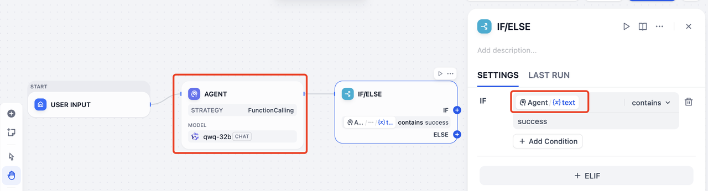
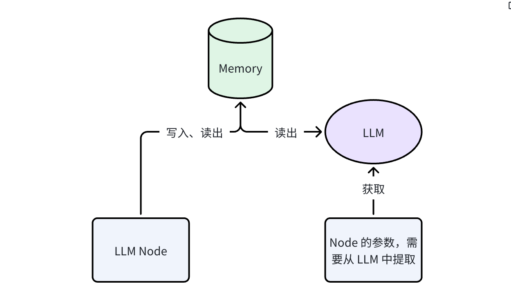

把人工审核、SOP 化上下文和沙箱执行串起来，搭出真正能进生产的 Agent 系统。
模型能力已经跨过了"能用"的门槛，但真正把 Agent 推进生产时，团队撞上的往往是这三面墙。
没有人工关卡，AI 生成的错误内容可以直接触达终端用户，一次事故就能摧毁信任。
金融、医疗、政务场景需要审批记录和可追溯链路，纯自动化流程过不了审计。
Prompt 越塞越大、工具越加越多、交接全靠隐式状态 —— 维护成本远超预期。
从单轮 Prompt 迈向完全编排、可控的 Agent 架构。
每一代都释放了新的价值 —— 也带来了新的复杂性。
单轮补全。无记忆、无工具、无状态。
节点链式调用，支持数据转换、RAG 与条件分支。
该停的时候停下来等人判断，该复用的时候调 Skills 和 SOP，该交接的时候把结果显式传下去。
决定 Dify 能否走向生产级 Agent 的三项关键能力。
把人的判断放进工作流图里，而不是放在工作流之外。
审核不能是事后补丁 —— 它应该作为原生关卡放在工作流里最需要的地方。
工作进行到一半，优先级变了，没有暂停点流程就会变得僵硬。
高风险流程里，团队需要看得见的检查点，才敢让 AI 代表业务行动。
外部审批队列和 Webhook 让人工审核变成额外工程，而不是原生能力。
发送邮件、发布内容、提交工单或触达客户之前暂停一次。
只在异常和边界情况触发，不用每次都审。
只补一个关键字段，然后让流程带着新值自动继续执行。
财务、合规和对客流程通常都需要一个可见的审批点。
流程先暂停，把该看的上下文交给人，再按三种结果之一继续执行。
生成审核页并送达正确的人。
插入可编辑字段，安全回传新值。
按钮、分支和超时规则，确保恢复。
当自动化结果要直接面向客户时，HITL 能把专家判断放在最关键的位置上。
报告生成已经自动化，但财务更新真正发给客户前，仍然需要合规团队做最后确认。
审核者看到的就是客户最终会看到的内容，必要时编辑后再一键批准。到六月，100 位客户都收到了一致的高质量报告。
HITL 不只是用来审批，它也很适合在流程中补齐缺失信息。
员工要在 HR、财务和 IT 的不同门户间来回切换。很多请求一开始就缺少路由所需的关键信息。
当研发部 Jason 询问报销时，工作流发现缺少地点信息，于是通过 Human Input 节点补采，随后返回了正确的上海办公室政策。
更理想的 Agent，不该把所有事都塞进自己体内：它负责选 SOP、调 Skill，并把结果稳稳交给下游。
当前 Agent 工作流的四个症结，以及更好的运行模式。
如果真正有价值的产物还留在 Agent 的内部记忆里，下游节点就只能从自然语言里猜。

示例：IF/ELSE 节点只能从文本里推断状态。
靠判断 Agent 有没有说出 success，既脆弱，也难维护。
原始表格、报告或中间文件可能埋在记忆里，下游只看得到总结。
后一个 Agent 不能稳定知道前一个 Agent 究竟交付了什么。
生产级工作流需要的，不只是一个润色后的答案。
给人看的最终解释或回复。
报告、表格、图片等，可继续被下游节点使用。
状态、决策、ID、参数等，供分支或工具直接读取。
让后续节点可以从中提取事实、参数甚至文件。
Skill 可以理解成可复用的执行单元：把 SOP、执行逻辑和稳定的交接格式封装在一起。
“这类事该怎么做”不再散落在各个节点里，而是跟着 Skill 一起沉淀下来。
发布一次，就可以被不同 Agent 和 Workflow 反复调用。
用固定输入单独运行 Skill，而不必触发整条流程。
Agent 可以锁住稳定版本，不必每次都被共享 Skill 的更新牵着走。
Context Engineering 需要一个团队共用的落点，而不是到处复制 Prompt。
/sops 工作区一个电商运营团队把 5 条独立工作流里重复的客服 SOP 收敛成一个共享 Skill，维护量降了四倍。
每条流程里都有一段近似的"客服话术 SOP"和"工单分类逻辑"，改一处要改五处。
每条流程只定义自己的入口文件和特有逻辑，共享部分由 Skill 统一维护和版本化。
推理层尽量轻，执行层围绕文件、命令和可复用产物展开。
Memory 不再只是实现细节，而是可以继续往下传的工作流产物。

提取 LLM 调用很轻量：读取有界上下文窗口，输出结构化字段。典型开销 <1s、<500 tokens。
如果提取失败，节点回退到上游 Agent 的原始文本输出，工作流不会静默中断。
RAG 从外部语料库检索；Memory Extraction 从同一次运行的工作上下文中提取。无需向量库 —— 这是工作流内状态，不是跨会话检索。
当 Agent 开始围绕 SOP、文件和显式交付物工作时，运行时就必须既好用又安全。
输入一行命令，返回 stdout，其余产物留在运行时里交给下一步。
report --input ./turnsheet.csv --format json模型在预训练里已经见过大量命令、管道和文件路径。
不需要为每个小转换动作都单独设计一套工具 UI。
大的工件保留成文件，显式地往下传，而不是硬塞回 Prompt。
不要把每种能力都包成一张 Tool 卡，而是直接把命令、文件和 stdout 暴露给运行时。
step1: A = google_search(query="Dify", max_size=30)
step2: B = summary(query=A)summary --query "$(google_search --query dify --max_size 30)"Agent 需要真实可用的执行环境，但不该直接碰到宿主机。沙箱让两者同时成立。
没有隔离时，代码可以读取本地凭证、环境变量和文件。
失控循环或内存暴涨会拖垮共享运行时上的所有任务。
导入的第三方包可能静默外传工作流数据。
SANDBOX=true
生产级系统不只要能跑通，还要在出问题时能快速定位、在日常运行中能持续度量。
每个节点的输入、输出、耗时和 Token 消耗都有独立追踪记录，出问题时可以精确回溯到具体步骤。
按工作流、按节点、按模型拆分 Token 成本，让团队知道钱花在了哪里。
瓶颈在推理、工具调用还是文件 I/O？延迟分布图让优化有据可依。
失败的运行可以连同完整上下文一起重放，不用猜、不用复现。
工作流本身会变成团队共同维护的产品资产。
不同成员可以分别起草、审查、发布，而不会互相覆盖。
每次发布都会形成快照，便于对比和快速回滚。
流程生命周期变得清晰可重复，而不是散落在截图和聊天记录里。
最佳实践不再是个人 Prompt 片段，而会沉淀成团队资产。
有人起草工作流，有人评审 SOP，负责人发布通过的版本，整个过程都留有历史记录。
一个真正能进生产的 Agent 系统里，推理、执行和人工审核都围绕显式交付物协同运转。
开源生态驱动，GitHub Top 100 项目
不需要一次用齐三个能力 —— 挑一个最痛的场景，今天就可以开始。
在 Dify 最新版中拖入一个 Human Input 节点，给你的工作流加上第一个人工关卡。
把你最常复制的 SOP 提炼成第一个 Skill，体验复用和版本化带来的效率提升。
Star 项目、加入 Discord，和全球开发者一起塑造 Agent 系统的未来。
有问题、反馈，或想深入了解某个特性？